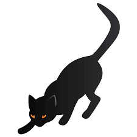

Decidiste intentar cazar a los roedores. Te acercás sigilosamente, muy despacio, hacia el lugar de donde provienen los sonidos agudos. Notás que hay una abertura en la pared, y que seguramente están resguardados en ese espacio. Calculás de lejos y pensás que podés entrar tranquilamente y tenderles una emboscada. Te acercás más, muy sigilosamente, y para tu sorpresa ves que se asoma una rata de color oscuro por la abertura. Sin pensarlo más... ¡ZAS!
Pegás un zarpazo, y lográs darle con las garras a la rata. Ésta chilla cada vez más, podés oler el miedo. Te apresurás a agarrarla con la boca, hacés un poco de presión, y ya no se escuchan más cihllidos. ¡Lo conseguiste! Ya tenés alimento.
Pero antes de disfrutar el banquete, decidís ir a buscar al compañero. Plagado de confianza y orgullo, te asomás por la abertura de la pared y podés ver dos ratas más ahí dentro. Con otro zarpazo, lográs agarrar a una de ellas, y terminás el trabajo con los colmillos. ¡Doble banquete!
Lamentablemente, la tercer rata logró escapar mientras estaba pasando esto; se fue por la abertura y cuando salís no la ves por ningún lado. No importa, al menos tenés doble ración de alimento para esta noche. ¡Caza exitosa!